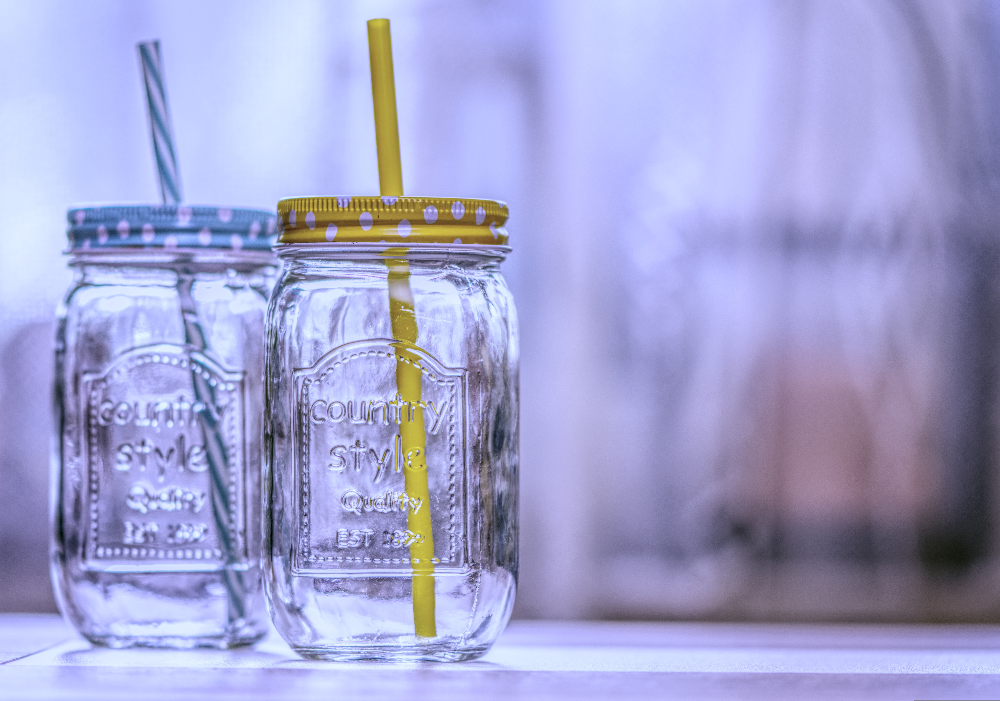

Drinking straws by Alexas. Source: Pixabay.
Plastic or Paper Straw?
Plastic straw have been around for a long time, and it can be extremely dangerous, especially when people fail to reuse, recycle or dispose of it property. The incident of the turtle with a straw in its nose in 2015 is a wake up call for everyone.